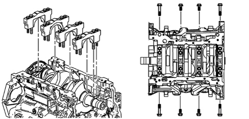
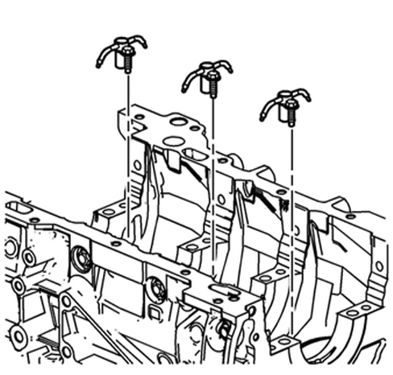

INTRODUCTION - ENGINE CRANKCASE
- Path
- Descriptions > 10 ENGINE > 1012 ENGINE BLOCK > INTRODUCTION - ENGINE CRANKCASE
- Kind
- system description
- Applies to
- engines: 3.2 JTS; all production periods
- Interactive page
- https://sloeber94.github.io/elrnDB-aBrrSpdr/en/#/946001158
Applies to: engines: 3.2 JTS; all production periods
Technical specifications
It is made entirely from aluminium alloy and is the main structural part of the engine. Its purpose is to contain and support all the crankshaft components.
In addition to housing the cylinder liners/bores, the engine crankcase supports the moving assemblies in the engine (pistons, connecting rods, crankshaft, camshaft, etc.), the fixed elements (cylinder head, oil sump, timing cover) and the auxiliary components (alternator, starter motor, climate control compressor, etc.).
The dry type cylinder liners/bores are incorporated in the cylinder block/crankcase.
Special ducts, in the crankcase walls, allow the flow of coolant and lubricant oil.
The crankshaft is supported by four bearing supports.
The crankshaft is fastened to the crankcase by means of four main bearing caps each of which has six fastenings, four vertical and two lateral; the diagrams below show the six fastenings for each bearing cap.

There are three twin nozzle oil jets in the lower part of the crankcase, one for a right bank cylinder and one for a left bank cylinder, for cooling/lubricating the pistons.
